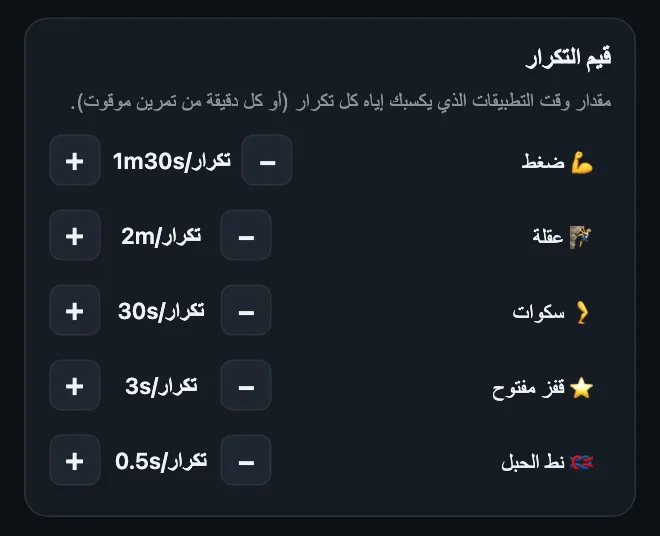

كم من وقت الشاشة يجب أن يساوي تمرين الضغط؟
أهلًا بالجميع! في HonorFit كل تكرار تسجّله يشتري لك وقتًا في التطبيقات، وأنت من يحدد السعر. وهذا أكثر سؤال يصلني بعد أن يضبط الناس التطبيق: كم يجب أن يساوي تمرين الضغط؟ دقيقة؟ عشر ثوانٍ؟ إليك كيف أفكر في الأمر.
القيم الافتراضية
إذا لم تلمس أي شيء، فهذا ما تحصل عليه:
| التمرين | يمنحك افتراضيًا |
|---|---|
| 💪 الضغط | دقيقة واحدة لكل تكرار |
| 🧗 العقلة | دقيقة و30 ثانية لكل تكرار |
| 🔥 البطن، 🦵 القرفصاء | 30 ثانية لكل تكرار |
| أي تمرين تضيفه | 30 ثانية لكل تكرار |
| التمارين بالوقت (المشي، اليوغا، HIIT) | 30 ثانية لكل دقيقة |
| التمارين بالمسافة | 5 دقائق لكل كيلومتر أو 8 لكل ميل |
| 👟 الخطوات | 3 دقائق لكل 1000 خطوة |
إذن 20 تمرين ضغط تساوي 20 دقيقة على إنستغرام. لكثير من الناس هذه بداية معقولة. ولآخرين هي سخية جدًا أو بخيلة جدًا. من أي فريق أنت؟
معادلة في سطر واحد
فكّر في رقمين:
- كم من الوقت في تطبيقاتك المحجوبة يبدو مقبولًا في يوم عادي؟ كن صادقًا، لا طموحًا.
- كم تكرارًا ستؤدي فعلًا مقابله، موزعة على اليوم؟
ثم اقسم: قيمة التكرار = الوقت ÷ التكرارات. تريد ساعة على تيك توك مقابل 60 تمرين ضغط؟ دقيقة لكل تكرار. تريد الساعة نفسها لكنك تؤدي 120 قرفصاء بسهولة؟ 30 ثانية لكل قرفصاء. هذا كل ما في الأمر حقًا.
وإذا كانت إجابة السؤال الثاني «ليس كثيرًا»، فلا بأس بذلك أيضًا. ضع سعرًا مرتفعًا لكل تكرار واستخدم الرصيد اليومي (الإعدادات، مجاني)، ليبدأ كل يوم وفي رصيدك بعض الوقت أصلًا.
بعض الإعدادات لتنسخها
| التمرين | كل تكرار يمنحك | ما تمنحه مجموعة واحدة |
|---|---|---|
| الضغط (مبتدئ) | دقيقة و30 ثانية | 10 تمارين ضغط = 15 دقيقة |
| الضغط (تتمرن منذ فترة) | 30 ثانية | 40 تمرين ضغط = 20 دقيقة |
| قفز الفتح والضم | 3 ثوانٍ | 100 قفزة = 5 دقائق |
| نط الحبل (لكل قفزة) | 0.5 ثانية | 600 قفزة = 5 دقائق |
| العقلة | دقيقتان | 5 عقلات = 10 دقائق |
| الجري (بالمسافة) | 6 دقائق لكل كيلومتر | جري 5 كم = 30 دقيقة |
القاعدة: كلما كان التكرار أسهل وأسرع، يجب أن تكون قيمته أقل. قفزة الفتح والضم تستغرق نحو ثانية، فلا يجب أن تمنحك ما تمنحه العقلة.
الأزرار صارت أدق في 1.18.0
حتى وقت قريب كانت أقل قيمة 5 ثوانٍ. فكان تسعير التكرارات السريعة جدًا (نط الحبل، قفز الفتح والضم) صعبًا، والوصول من 3 إلى 10 دقائق يستغرق دهرًا. كتب لي أحد المستخدمين عن الأمرين، لذلك صارت أزرار −/+ في 1.18.0 تتحرك على سلّم أذكى:
- أقل من 5 ثوانٍ: 4 و3 و2 وثانية واحدة، ثم 0.5 و0.25 و0.1 ثانية.
- من 5 ثوانٍ إلى دقيقة: خطوات من 5 ثوانٍ.
- من دقيقة إلى 3 دقائق: خطوات من 15 ثانية.
- من 3 إلى 10 دقائق: خطوات من 30 ثانية.
- أكثر من 10 دقائق: خطوات من دقيقة.
تجدها في مكانين:
- الإعدادات ← قيم التكرارات: سطر −/+ لكل تمرين. الأسرع إذا أردت فقط تعديل سعر واحد.
- الإعدادات ← التمارين ← تعديل: المحرر الكامل، الذي تضيف فيه التمارين أيضًا وتعيد تسميتها وتحذفها، وتبدّل بين التكرارات والدقائق والمسافة. الشرح الكامل في كيف تخصص تمارينك في HonorFit.

علامات أن سعرك غير مناسب
- تضبط نفسك تسجّل تكرارات لم تؤدّها. وقتك غالٍ جدًا. هذا ما يخبرك به نظام الشرف. ارفع القيم خطوة بخطوة حتى تختفي الرغبة.
- رصيدك لا ينفد أبدًا. وقتك رخيص جدًا. اخفض القيم خطوة أو اثنتين، أو احجب تطبيقًا آخر.
- تؤدي تكراراتك، لكن على مضض. غالبًا التمرين هو الخطأ، لا السعر. اختر شيئًا لا تكرهه. المشي يُحسب. وكذلك التمارين الأخف.
- تدّخر ساعات ثم تنفقها كلها في المساء. فعّل إعادة الضبط عند منتصف الليل (مجاني)، حتى لا يتراكم الوقت غير المستخدم.
امنح كل إعداد جديد نحو أسبوع قبل أن تغيّره مجددًا. الأيام القليلة الأولى تبدو غريبة في كل الأحوال.
الوضع الصعب ووضع المرض
للأيام التي لا تناسب إعدادك المعتاد، هناك زر 💀 الوضع الصعب يمكنك وضعه في أعلى الشاشة الرئيسية (الإعدادات ← الوضع الصعب ووضع المرض، مجاني). اضغطه مرة، فيمنحك كل تكرار النصف. اضغطه مرة أخرى لـ 🤒 وضع المرض، الذي يمنحك فيه كل تكرار الضعف، للأيام التي لا تكون فيها بخير. اضغطه مرة ثالثة، فيعود كل شيء إلى طبيعته. قيمك الأصلية لا تتغير أبدًا، فلا شيء تحتاج إلى التراجع عنه.
لست مدربًا: أنا أصنع التطبيق، لست مدربًا رياضيًا. إذا آلمك تمرين فتوقف، وإذا كانت لديك إصابة أو حالة صحية فاسأل شخصًا يعرف جسمك عمّا يناسبك. ثم اضبط HonorFit على ذلك.
HonorFit Blocker حاجب تطبيقات مجاني لـ iPhone وAndroid. أنت تختار التمارين وقيمتها. نظام الشرف، بلا كاميرا، ولا شيء يغادر هاتفك.